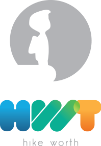

- 
-
MappingMappa, Template Visuali, Visual thinking, Disegno, Canvas, Chiaro,
Intuitivo, Back Napkin, Grafica, Infografica, Il potere delle immagini
-
GamingDivertimento, Simulazione di Business, Check-up.
Il gioco permette di sviluppare il potenziale delle persone,
Tutti possono contribuire alle discussioni e alle decisioni.
Libera espressione personale.
Arrivare rapidamente a risultati esprimendosi con strumenti che
richiamano il gioco e il divertimento.
Approccio collaborativo e dinamico
-
StrategiaBussola, Esplorazione, Business Strategy, Hike,
Hike Mapping (Livello strategico),strumenti,
Toolkit, direzione, posizionamento strategico,
marketing strategico
-
User ExperienceNarrazione, Story Telling, Personas,
Customer Journey Map
-
ContattiChi Siamo,
Dove Siamo
-
 Know-HowKnowledge Management, Condivisione della conoscenza,
Know-HowKnowledge Management, Condivisione della conoscenza,
Valorizzazione delle risorse, delle competenze,
del capitale intellettuale, degli intangible.
Mettere al centro del proprio lavoro le persone,
i loro bisogni e le aspettative,
scommettere sulle persone, continua sperimentazione -
 Start-UpAurora,Alba, Illuminare, Business Model Design,
Start-UpAurora,Alba, Illuminare, Business Model Design,
Canvas, Lean, Agile -
 Business ModelDesign, Business Architecture, Business Modeling,
Business ModelDesign, Business Architecture, Business Modeling,
Value Tracking (Livello Management).
Kaizen, Lean, Agile. Business Design
Design Process, Business Model Canvas.
Management
HWT s.r.l. - Via Francesco Domenico Guerrazzi 1/n - 50132 Firenze - CF e P.IVA 06281750486
Il Visual Thinking rappresenta la pratica di usare le immagini per comunicare in maniera chiara e intuitiva.
Schizzi, disegni o note su post-it, per esempio, possono essere utilizzati per costruire e discutere un'idea o per risolvere problemi.
Le tecniche visuali permettono di "dare vita" alle questioni legate al business, passando dall'astratto al concreto.
Credendo fortemente nel potere delle immagini, il Team di HWT ha sviluppato un toolkit di strumenti visuali che si vanno ad aggiungere a quelli già consolidati e presenti nello scenario attuale, come il Business Mode Canvas, una mappa concettuale (una sorta di "tela" da cui deriva il nome Canvas) suddivisa in nove elementi base, che funziona attraverso dei post-it, che diventano contenitori di idee e rappresentano un mezzo per le discussioni di tipo strategico.
Lo "schizzo" è il modo con cui visualizzare le idee, come suggerisce Dam Roam nel libro "The Back of the Napking (2008).
Schizzi, disegni o note su post-it, per esempio, possono essere utilizzati per costruire e discutere un'idea o per risolvere problemi.
Le tecniche visuali permettono di "dare vita" alle questioni legate al business, passando dall'astratto al concreto.
Credendo fortemente nel potere delle immagini, il Team di HWT ha sviluppato un toolkit di strumenti visuali che si vanno ad aggiungere a quelli già consolidati e presenti nello scenario attuale, come il Business Mode Canvas, una mappa concettuale (una sorta di "tela" da cui deriva il nome Canvas) suddivisa in nove elementi base, che funziona attraverso dei post-it, che diventano contenitori di idee e rappresentano un mezzo per le discussioni di tipo strategico.
Lo "schizzo" è il modo con cui visualizzare le idee, come suggerisce Dam Roam nel libro "The Back of the Napking (2008).
Il nostro metodo di lavoro si sviluppa sulla convizione che quando le persone vengono coinvolte "giocando" diventa più facile per loro analizzare situazioni o individuare soluzioni.
Per questo i nostri strumenti richiamano il gioco e il divertimento, e si basano su un approccio collaborativo e dinamico.
Il gioco infatti permette di sviluppare il potenziale delle persone, favorendo la libera espressione personale e favorendo il contributo di tutti alle discussioni e alle decisioni.
Sia che un'organizzazione voglia esplorare un nuovo business, sia che voglia far crescerne uno già esistente, la rappresentazione completa della strategia di business è fondamentale.
Tenuto conto di questo obiettivo, il punto di partenza è per noi l'esplorazione del modello organizzativo attuale, ed in particolare l'analisi dell'identità delll'organizzazione,
in termini di cultura organizzativa, risorse o capabilities disponibili, posizionamento rispetto ai competitors.
Il toolkit di strumenti visuali che andiamo ad utilizzare si compone innanzi tutto del Business Model Canvas, che rappresentando il modello di business attuale, diventa la lente per la reinterpretazione della strategia.
Seguirà l'esame strategico dell'ambiente in cui opera il modello di business.
Queste sono le fasi del nostro lavoro a livello strategico:
A - Hike Mapping
Modello di Business
B - Business Compass
Cultura organizzativa (i valori fondamentalu in cui crede l'organizzazione, i sogni e le ambizioni)
C - Business Engine
Capabilities/Resources Assessment
D - Market
Analisi dell'ambiente
Analisi del mercato
Analisi dei concorrenti
Posizionamento strategico
E - Finance
Analisi economico-finanziaria
F - Business Pattern
Business Strategy
Marketing Strategico
Tenuto conto di questo obiettivo, il punto di partenza è per noi l'esplorazione del modello organizzativo attuale, ed in particolare l'analisi dell'identità delll'organizzazione,
in termini di cultura organizzativa, risorse o capabilities disponibili, posizionamento rispetto ai competitors.
Il toolkit di strumenti visuali che andiamo ad utilizzare si compone innanzi tutto del Business Model Canvas, che rappresentando il modello di business attuale, diventa la lente per la reinterpretazione della strategia.
Seguirà l'esame strategico dell'ambiente in cui opera il modello di business.
Queste sono le fasi del nostro lavoro a livello strategico:
A - Hike Mapping
Modello di Business
B - Business Compass
Cultura organizzativa (i valori fondamentalu in cui crede l'organizzazione, i sogni e le ambizioni)
C - Business Engine
Capabilities/Resources Assessment
D - Market
Analisi dell'ambiente
Analisi del mercato
Analisi dei concorrenti
Posizionamento strategico
E - Finance
Analisi economico-finanziaria
F - Business Pattern
Business Strategy
Marketing Strategico

L'UX è per noi un driver di valore e pertanto ha un ruolo centrale in tutte le fasi di contatto con il cliente. Utilizziamo template visuali,
i"Personas", per descrivere i nostri clienti, cercando di coglierne a fondo le proccupazioni, le ambizioni, i comportamenti e la loro esperienza (CX= Customer Experience).
I"Personas" sono quindi il nostro framework di riferimento per esplorare il valore del cliente.
Gli scenari che mostrano l'interazione tra i clienti e i servizi è guidata step by step dalla Customer Journey Map, che fornisce un supporto visuale che facilita la comprensione e la sequenza delle attività e delle vulnerabilità che caratterizza la service experience.
Le decisioni sono guidate dai feedback progressivi forniti direttamente dai clienti.
La combinazione di User Experience è Strategia è la chiave per la scoperta del valore dei nostro clienti.
i"Personas", per descrivere i nostri clienti, cercando di coglierne a fondo le proccupazioni, le ambizioni, i comportamenti e la loro esperienza (CX= Customer Experience).
I"Personas" sono quindi il nostro framework di riferimento per esplorare il valore del cliente.
Gli scenari che mostrano l'interazione tra i clienti e i servizi è guidata step by step dalla Customer Journey Map, che fornisce un supporto visuale che facilita la comprensione e la sequenza delle attività e delle vulnerabilità che caratterizza la service experience.
Le decisioni sono guidate dai feedback progressivi forniti direttamente dai clienti.
La combinazione di User Experience è Strategia è la chiave per la scoperta del valore dei nostro clienti.

Il valore di un'organizzazione non si misura esclusivamente dalle risorse tangibili, ma risiede soprattutto nella conoscenza,
intesa come valorizzazione del capitale inellettuale, delle competenze e in generale di tutte le risorse "intangible".
Il nostro lavoro mette sempre al centro le persone, i loro bisogni e le loro aspettative; è su di esse che dobbiamo scommettere.
L'esplorazione del valore prevede quindi anche un percorso di condivisione, codifica, trasferimento di conoscenza,
e per questo sviluppiamo strumenti di knowledge management secondo approcci divesi e specifici per ciascuna organizzazione.
intesa come valorizzazione del capitale inellettuale, delle competenze e in generale di tutte le risorse "intangible".
Il nostro lavoro mette sempre al centro le persone, i loro bisogni e le loro aspettative; è su di esse che dobbiamo scommettere.
L'esplorazione del valore prevede quindi anche un percorso di condivisione, codifica, trasferimento di conoscenza,
e per questo sviluppiamo strumenti di knowledge management secondo approcci divesi e specifici per ciascuna organizzazione.

La Start-up nasce da un'idea, ma affinchè un'idea possa essere trasformata in business ogni suo elemento deve essere descritto e analizzato in chiave strategica.
HWT è una start-up, e come tale conosce le condizioni di estrema incertezza e di vulnerabilità in cui si muovono questo tipo di organizzazioni.
Abbiamo potuto testare su noi stessi i benefici dell'utilizzo del Business Model Canvas, per l'esplorazione e la descrizione del nostro modello di business.
Crediamo nell'approccio Lean Start-up, ovvero nel rilascio di modelli di business prototipali, che possano evolvere grazie a continui feedback da parte dei clienti.
HWT è una start-up, e come tale conosce le condizioni di estrema incertezza e di vulnerabilità in cui si muovono questo tipo di organizzazioni.
Abbiamo potuto testare su noi stessi i benefici dell'utilizzo del Business Model Canvas, per l'esplorazione e la descrizione del nostro modello di business.
Crediamo nell'approccio Lean Start-up, ovvero nel rilascio di modelli di business prototipali, che possano evolvere grazie a continui feedback da parte dei clienti.
Il Business Model racconta il funzionamento di un'organizzazione. Convinti che ogni persona possa apportare valore all'organizzazione secondo un
approccio Kaizen, che incoraggia un percorso di miglioramento continuo basato sul rinnovamento a piccoli passi giorno per giorno, crediamo che la
descrizione di un modello di business debba essere condotta attraverso il supporto di tutti, ed è pertanto necessario che ci sia una comprensione
condivisa di ciò che è realmente un modello di business.
Il Business Model Canvas risponde a queste necessità, essendo un template visuale che favorisce la comprensione del modello di business, rendendolo
un concetto facilmente accessibile a tutti e facilitando così la discussione.
Attraverso questo strumento è possibile descrivere la logica in base alla quale un'organizzazione crea, distribuisce e cattura valore, lavorando su
quattro principali aree di business: i clienti, l'offerta, le infrastrutture e la solidità finanziaria.
La parte centrale del Business Model Canvas identifica il valore offerto al cliente (Value Proposition) e rappresenta alcuni degli aspetti di maggior importanza
per il business model, come i clienti target (Customer Segment), i flussi di ricavi che derivano dal valore offerto ai clienti (Revenue Streams) e gli elementi
che determinano la struttura dei costi (Cost Structure).
Il valore raggiunge il cliente attraverso i canali (Channels), e la comunicazione valore/cliente è rappresentata dalle relazioni stabilite con ciascun segmento
della clientela (Customer Relationships). Il valore viene generato da risorse (Key Resources) e attività chiave (Key Activities) e da partnership chiave nel caso di ousourcing
o risorse acquisitie all'esterno (Key Partners)
approccio Kaizen, che incoraggia un percorso di miglioramento continuo basato sul rinnovamento a piccoli passi giorno per giorno, crediamo che la
descrizione di un modello di business debba essere condotta attraverso il supporto di tutti, ed è pertanto necessario che ci sia una comprensione
condivisa di ciò che è realmente un modello di business.
Il Business Model Canvas risponde a queste necessità, essendo un template visuale che favorisce la comprensione del modello di business, rendendolo
un concetto facilmente accessibile a tutti e facilitando così la discussione.
Attraverso questo strumento è possibile descrivere la logica in base alla quale un'organizzazione crea, distribuisce e cattura valore, lavorando su
quattro principali aree di business: i clienti, l'offerta, le infrastrutture e la solidità finanziaria.
La parte centrale del Business Model Canvas identifica il valore offerto al cliente (Value Proposition) e rappresenta alcuni degli aspetti di maggior importanza
per il business model, come i clienti target (Customer Segment), i flussi di ricavi che derivano dal valore offerto ai clienti (Revenue Streams) e gli elementi
che determinano la struttura dei costi (Cost Structure).
Il valore raggiunge il cliente attraverso i canali (Channels), e la comunicazione valore/cliente è rappresentata dalle relazioni stabilite con ciascun segmento
della clientela (Customer Relationships). Il valore viene generato da risorse (Key Resources) e attività chiave (Key Activities) e da partnership chiave nel caso di ousourcing
o risorse acquisitie all'esterno (Key Partners)
HWT è una start-up fondata nel 2013 da un team di giovani legati dal-
la convinzione che la vera sfida per le imprese risieda nella ricerca e
l'esplorazione del proprio valore.
HWT sta per Hike + Worth ovvero "Esplorazione del valore" come
strumento per "illuminare" il business e "scalare" il successo.
Con strumenti semplici, intuitivi, agili e innovativi aiutiamo le organiz-
zazioni che vogliono innovarsi nella comprensione e nello sviluppo
del proprio business fornendo un kit di conoscenze strategiche e ma-
nageriali con un approccio non convenzionale basato sul visual thin-
king, che permette di ottenere benefici tangibili e inaspettati.
Il nostro metodo si fonda sulla rappresentazione grafica, che consi-
deriamo il modo più semplice e creativo per fissare concetti o rap-
presentare problemi e idee; per questo utilizziamo strumenti derivati
dal pensiero visuale, tra i quali il Business Model Canvas, ideato da
Alexander Oserwalder e diffuso attraverso il libro di cui egli stesso è
autore "Business Model Generation"
la convinzione che la vera sfida per le imprese risieda nella ricerca e
l'esplorazione del proprio valore.
HWT sta per Hike + Worth ovvero "Esplorazione del valore" come
strumento per "illuminare" il business e "scalare" il successo.
Con strumenti semplici, intuitivi, agili e innovativi aiutiamo le organiz-
zazioni che vogliono innovarsi nella comprensione e nello sviluppo
del proprio business fornendo un kit di conoscenze strategiche e ma-
nageriali con un approccio non convenzionale basato sul visual thin-
king, che permette di ottenere benefici tangibili e inaspettati.
Il nostro metodo si fonda sulla rappresentazione grafica, che consi-
deriamo il modo più semplice e creativo per fissare concetti o rap-
presentare problemi e idee; per questo utilizziamo strumenti derivati
dal pensiero visuale, tra i quali il Business Model Canvas, ideato da
Alexander Oserwalder e diffuso attraverso il libro di cui egli stesso è
autore "Business Model Generation"